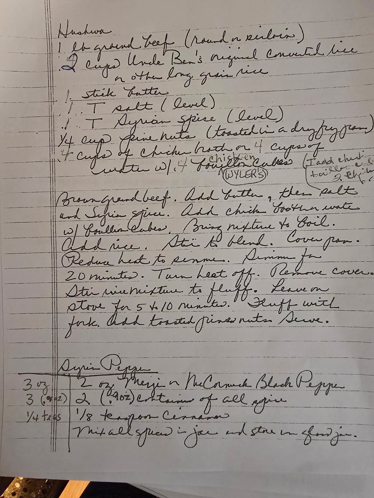
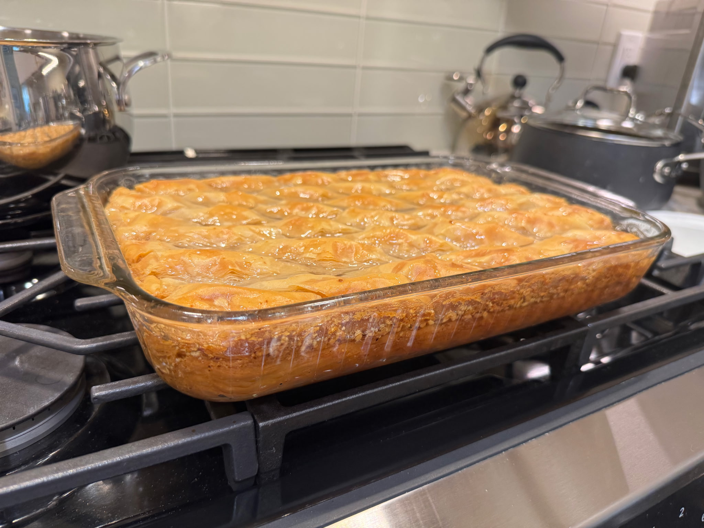
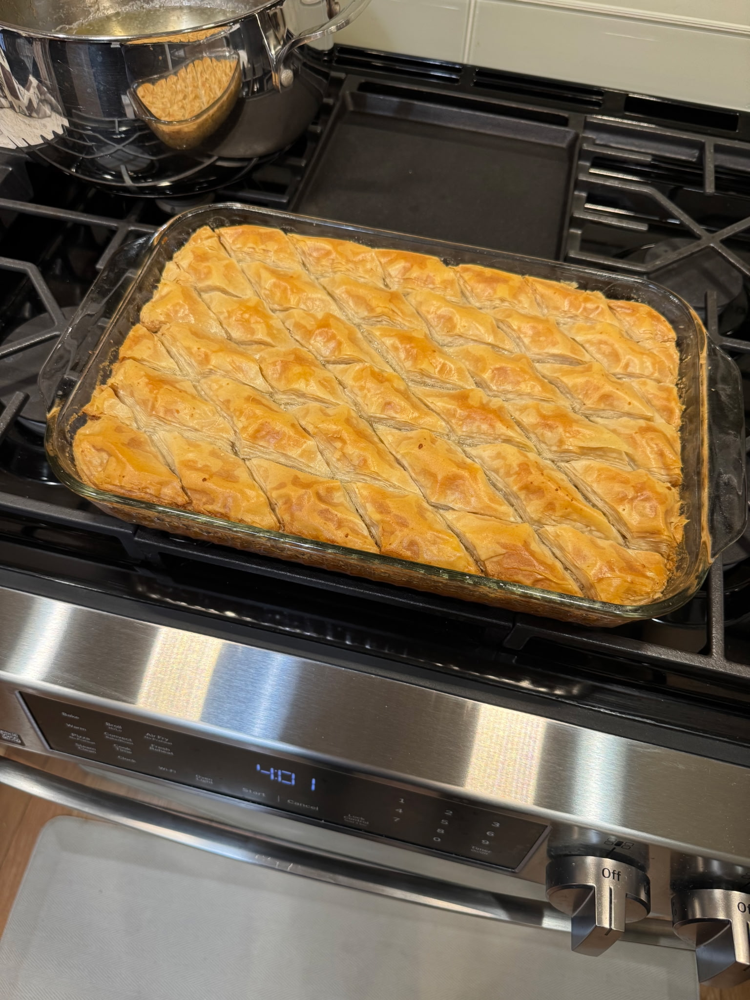
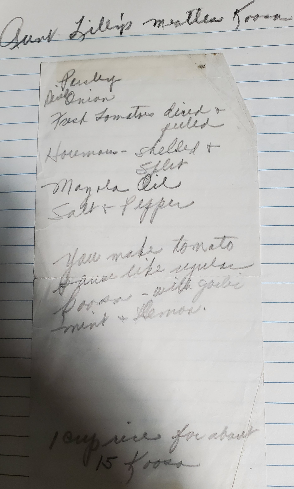
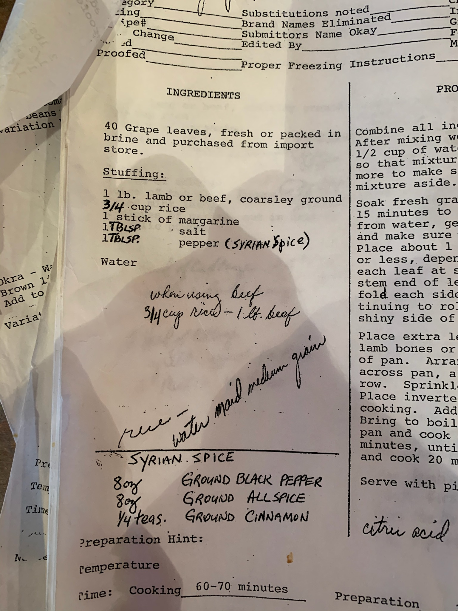
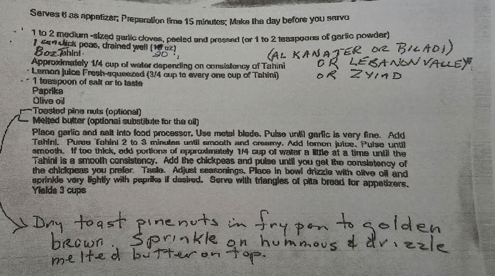

Cabbage Rolls
Lamb and rice rolled in tender cabbage leaves
View Recipe →

Hashwa
Spiced ground beef and rice — the heart of Lebanese stuffing
View Recipe →

Lebanese Rice
Toasted vermicelli and rice — a family staple
View Recipe →

Batlawa (Half Sheet Pan)
Virginia Farhat's baklava — phyllo, walnuts and orange blossom syrup on a half sheet pan
View Recipe →

Batlawa (13×9 Pyrex)
Lebanese baklava scaled for a 13×9 Pyrex dish — Fillo Factory #4, clarified butter & cold syrup
View Recipe →

Batlawa Tartlets
Virginia Farhat's batlawa filling in crispy phyllo cups — a bite-sized variation
View Recipe →

Aunt Lily's Meatless Koosa
Rice-stuffed zucchini with hommos and fresh tomato — a lighter Lebanese classic
View Recipe →

Sfeeha
Lebanese open-faced meat pies on a rich, pillowy dough — baked hot on the lower rack
View Recipe →

Grape Leaves
Lamb or beef and rice rolled in tender grape leaves — a Farhat family labor of love
View Recipe →
🫑
Stuffed Peppers
Multicolor peppers filled with seasoned ground chuck and rice, baked in a citric tomato sauce
View Recipe →

Chicken Stuffed with Hushwa
Whole chicken filled with spiced ground beef, rice, and pine nuts — slow roasted to perfection
View Recipe →

Moghrabieh
Lebanese couscous with chicken, chickpeas, pearl onions, caraway, and cinnamon — Ida's recipe
View Recipe →

Mary David's Easter Cookies
Lebanese ma'amoul-style cookies — anise dough stuffed with dates and nuts, glazed hot from the oven
View Recipe →

Hummus bi Tahini
Classic Lebanese hummus — garlic and tahini pureed smooth, finished with olive oil, paprika, and toasted pine nuts
View Recipe →
🫕
Kibbe Labnia
Kibbe balls simmered in a silky yogurt and rice broth — a Syrian classic from the Farhat family
View Recipe →
🪺
Syrian Birds' Nests
Buttery cookie-dough nests filled with pistachios and walnuts, baked golden and soaked in sugar syrup
View Recipe →
🫘
Mjadaara
Lentils and crushed wheat with deeply caramelized onions — a Syrian-Lebanese staple by Mary David
View Recipe →